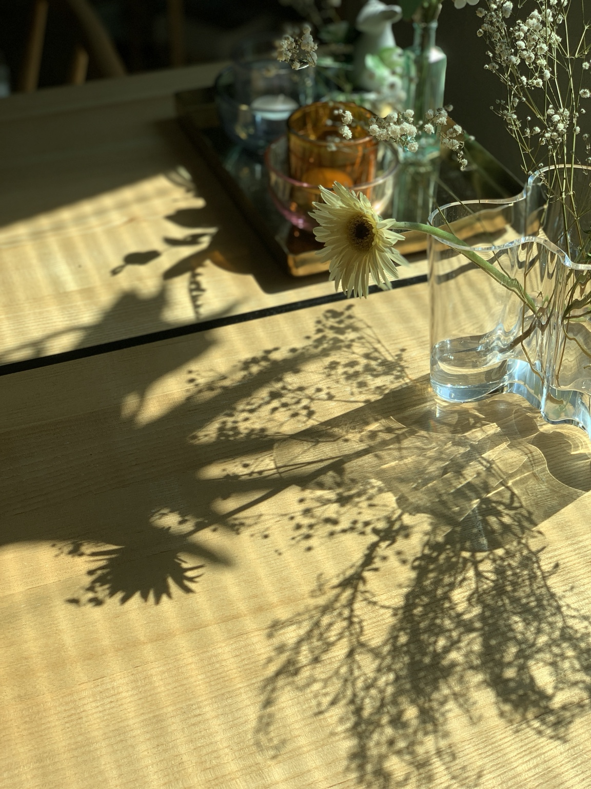
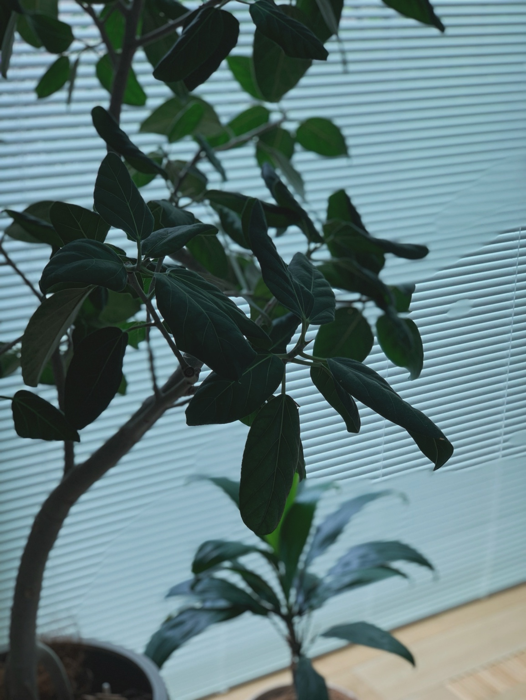
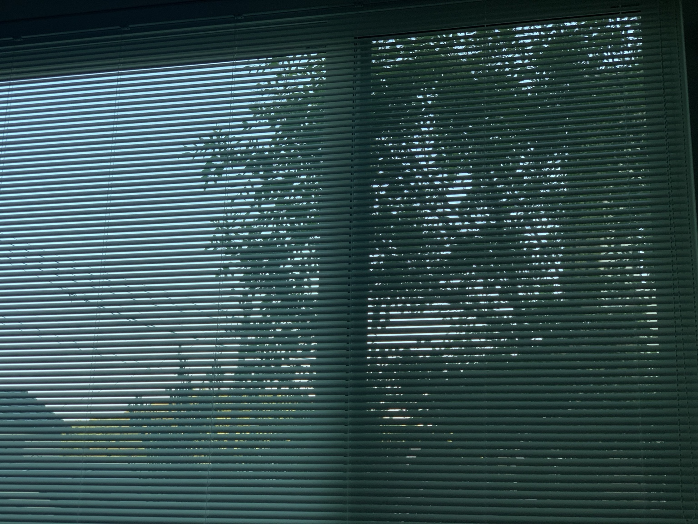
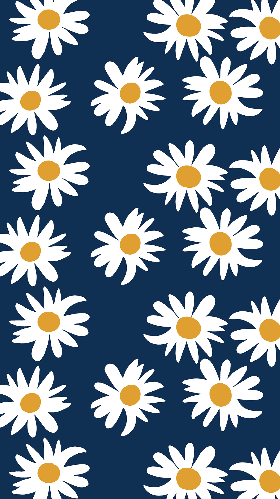
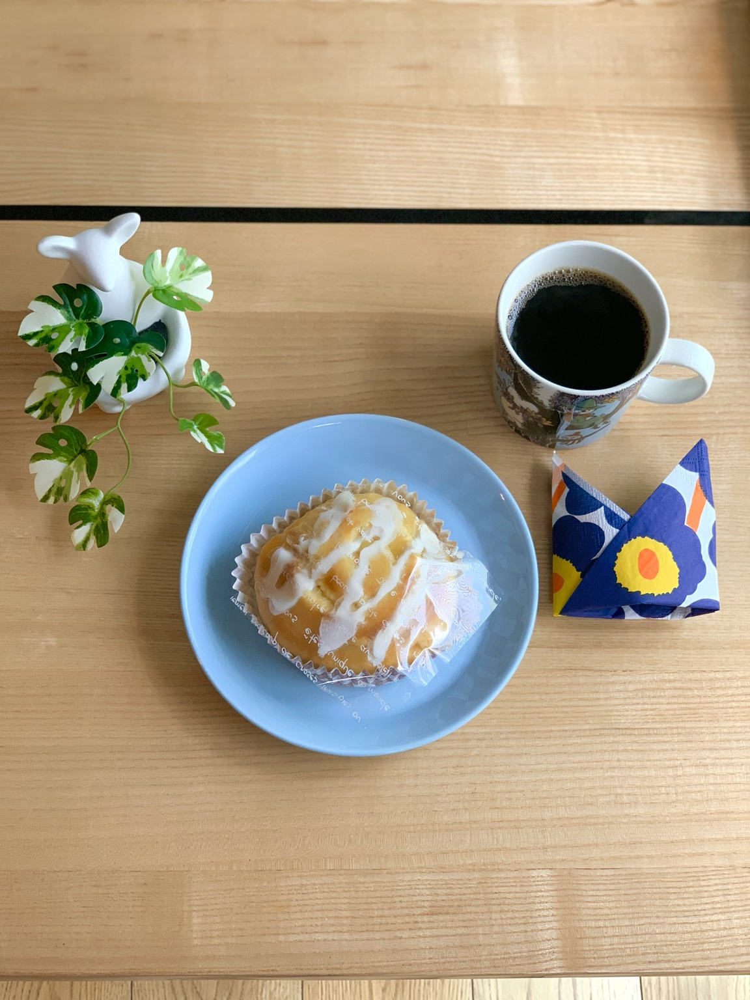

NORDIC · BABY · EVERYDAY LIFE
北欧と子どもと、日々のこと。

ABOUT LILLA
北欧の器やインテリア、子どもとの毎日。 特別な日じゃなくても、暮らしの中には小さな「好き」がある。 そんな日々を、写真と言葉で残していく場所です。
CONTENTS
気になる # から、のぞいてみて。

2026.08.28 · #育児日記
赤ちゃんとの何気ない一日を、ゆっくり記録していく。

2026.08.20 · #調べてみた
気になったことを調べて、自分なりにまとめてみる。

2026.08.12 · #marimekko
マリメッコと過ごす、ちょっと嬉しい日常。
2026.08.05 · #iittala
iittalaの器と、家で楽しむ小さなひと休み。
GALLERY
写真をクリックすると大きく見られます。

FOLLOW